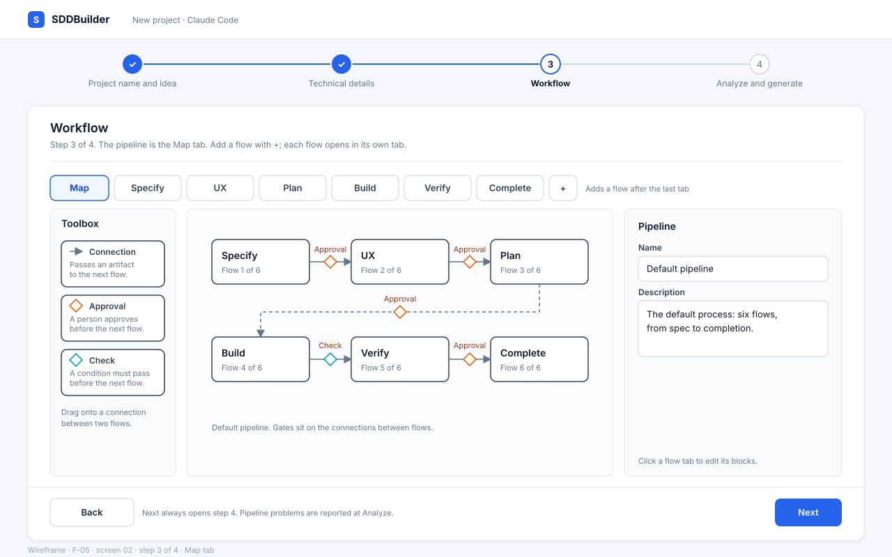

1 of 4 Project name and idea
The wizard frame: stepper, Back and Next. Nothing is stored between visits.

Wizard frame, step 1 (name and idea), and the Map tab of step 3 (the builder is F-06). Steps 2 and 4 are F-21 and F-22. Wireframes only; read screens.md.
The wizard frame: stepper, Back and Next. Nothing is stored between visits.
The Map tab is the first tab. The + adds a flow after the last tab. Each flow opens in its own tab (F-06).
